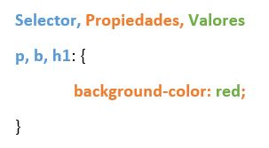
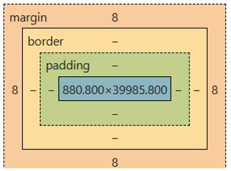

La estructura básica de CSS consta de un selector y bloques de declaraciones con propiedades y valores.

Propiedades fundamentales para definir tonalidades en elementos.
Controla la transparencia de un elemento.
opacity: 0.5;
Selectors para un elemento único o grupos.
id: para cambiar un elemento en concreto
<div id="miElemento">Contenido</div>
class: para cambiar un grupo de elementos
<div class="miClase">Contenido 1</div>
<div class="miClase">Contenido 2</div>
Se utilizan para aplicar estilos cuando un elemento cambia de estado o para seleccionar elementos específicos sin necesidad de agregar nuevas clases al HTML. Se escriben con dos puntos simples
a:hover { color: red; } Cambia el color del texto a rojo cuando el cursor está sobre un enlaceinput:focus { color: gray; }Cambia el color del texto a gris cuando recibe el foco:nth-child(2) para el segundo hijo:nth-child(odd) para impares:nth-child(3n) para múltiplos de 3option:checked: Selecciona casillas de verificación o botones de radio activos.Permiten estilizar partes específicas de un elemento o de todos elementos a la vez o insertar contenido sin modificar el HTML. Se escriben con dos puntos dobles
a::before {
color: blue;
content: "🔗 ";
}
.nota::after {
content: "(Leer con atención)";
font-weight: bold;
color: red;
}
p::first-letter { /* Estiliza la primera letra de cada párrafo */
font-size: 3rem;
color: #c0392b;
float: left;
margin-right: 10px;
}
p::first-line { /* Estiliza la primera línea de cada párrafo */
font-weight: bold;
text-transform: uppercase;
color: #333;
}
::selection { /* Estiliza el texto seleccionado por el usuario */
background: yellow; /* El fondo al seleccionar */
color: black; /* El color de la letra al seleccionar */
}

El tamaño de las cajas se cambia con width y height, con border se cambia los bordes y
con margin y padding los márgenes
display: block | inline | inline-block;
Las cajas pueden estar block, que ocupa toda la línea hasta el final de la pantalla,
el siguiente elemento se posicionará debajo, o inline, solo ocupa lo que ocupe su contenido,
el siguiente elemento se posicionará a su derecha o si llega al final de pantalla, debajo.
Con este valor no se podrá cambiar el tamaño al elemento.
Las etiquetas <div> y <span> se usan para agrupar otras etiquetas
<div> está en Block por defecto y <span> está en in-line
Para cambiar una etiqueta de inline a block y viceversa se usa la propiedad display,
que también puede contener el valor none, el cuál elimina el elemento de la pantalla.
La propiedad visibility: hidden también la oculta, pero mantiene la posición.
Inline-block
Este valor se comporta igual que un elemento inline pero se puede cambiar el tamaño
Define cómo se ubican los elementos en el documento.
position: static;
(Por defecto) Es la posición normal. Los elementos aparecen uno detrás de otro, como si fueran camisas dobladas en una pila una encima de la otra. Aquí no funcionan las propiedades top, bottom, left o right.
position: relative;
El elemento se posiciona respecto a su posición normal. Las propiedades top, bottom, left y right desplazan el elemento desde su posición original.
Punto de referencia para hijos
position: absolute;
coordenadas respecto al padre (si tiene relative) o documento
position: fixed;
Relativo al viewport (no hace scroll)
position: sticky;
fixed: relativo al viewport (no hace scroll)
sticky: relativo al scroll y padre
Atajo para top: 0; right: 0; bottom: 0; left: 0;
Sistema diseñado para organizar elementos en una sola dimensión.
display: flex;
flex-direction: row;
justify-content: center;
align-items: center;
Sistema para controlar columnas y filas simultáneamente.
display: grid;
grid-template-columns: repeat(3, 1fr);
gap: 16px;